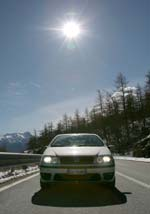
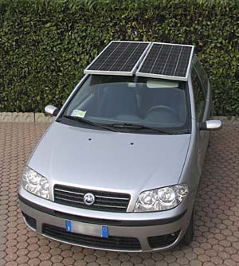
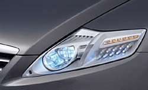
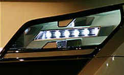
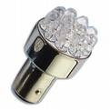
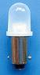
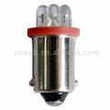

Batteries & energy
How much does it cost to keep the lights (low beams) always on in the car?
"DIY" by R.Chirio
Page index
Considerations
February 2007
How to calculate the additional expense for auto lighting (dipped headlights) always inserted even during the day?
Let's do the analysis on my vehicle which is very common, the FIAT Punto 1.3 Multijet. From the on-board computer data you can see it consumes an average of 4.3 liters/100Km of diesel which currently costs 1.070 euros/liter.
So I spend 4.60 euros of fuel to do 100Km, I travel an average of 30000K/year so I spend 1380 Euros/year on fuel. (We don't consider maintenance costs, such as oil, tires and various spare parts)

Test data detected:
Verification of electrical current draw with Punto Diesel Multijet 1.3 Hot engine running at idle:
Lights off VB: 14.36 - 14.42 V current draw: 11.00 - 11.90 A power: 157.96 - 171.59 W
Lights on VB: 14.33 - 14.39 V current draw: 22.90 - 23.80 A power: 328.15 - 342.48 W
From the difference we get the Power dissipated by the lights equal to about: 170 W
Measurements with 19999 count millivoltmeter, current with 1mV/A Shunt Ambient temp. 15°C
The measurement is made on a Magneti Marelli 55A/h-500 type battery, new (1 month old); the reading relates to the wires supplying power to the vehicle; excluded is the (thicker) wire to the starter motor which also receives charging current from the alternator. The measurement is made with the engine warm and no extra electrical load such as car radio, fog lights, rear fog lights and heated rear window on.
When the car engine is on all the on-board current is supplied by the alternator, furthermore after starting if the loads are not high, part of the current is used to charge the battery (about 5-10A). Keep in mind that completely discharged batteries are fully recharged even after 10 hours of engine running. Travel conditions with lights on and other important electrical devices do not allow fast recharging of the on-board battery. (The typical use of the car to go shopping doing a few kilometers, leads to premature replacement of the battery, useful in this case an external battery charger to use once a month to rejuvenate the car battery).
Alternator efficiency is low at around 55% (those at 24V are a bit better) therefore the power absorbed by the lights at the engine shaft equals 171/0.55 = 310W (1HP = 750W), so let's say that when we turn on the low beams (or dipped lights) the alternator draws an additional 0.5 HP from the engine. (We round upward for ease of calculation)
From the on-board computer I detect that the average speed is 59Km/h over a distance of 5000Km (lots of extra-urban road, little city and little highway).
It is anyway for me a typical annual average mileage and the data is reliable for calculation.
To travel on average at 59km/h with the car without passengers, the required power is about 25CV (even less to evaluate better, as the air impact is felt heavily only after 90Km/h with quadratic evolution).
Our fuel cost is 1380 Euro/year with an average power used of 25CV.
1380/25 = 55.2 euro cost/horsepower/year
Additional cost for turning on lights. 55.2 x 0.50 = 27.6 Euro for a mileage of 30000Km/year.
Add the cost of light bulbs that need to be changed more frequently and the average wear on the alternator and alternator belt. (Here it's a bit more difficult to evaluate but it's always euros per year to add.)
I would say that the battery cost is little affected by this light on, all at the expense of the alternator.
The projectors use 55W H7 lamps that cost 7.5 euros each.
Calculate vehicle operating hours per year:
30000 km at 59 Km/h makes: 508 hours of operation
In practice for now I can say I'm replacing 2 H7 lamps per year (so every 500 hours, which is good as specifications require at least 200 hours duration), at a cost of about 15 euros plus another 5 euros for position lamps, stop and license plate lights. I do the electrical work on the car myself; consider that service at an auto electrician could cost significantly more......
Without a regulation for always-on lights, more than a third of annual driving would be done at night or in winter with lights on anyway, so the final cost should be reduced by 1/3.
Annual lighting cost becomes: (27.6 + 20) x 2/3 = 31.7 Euro for 30000Km/year.
Costs can vary considerably from vehicle to vehicle and also greatly depending on driving style (heavy foot..) therefore my reasoning should be taken only as a starting point to show that full-time light activation leads to spending and pollution, but certainly also brings benefits in terms of safety.
Final remarks:
The figure obtained is not much if referred to the total annual costs of car use, unfortunately the figure increases as we've seen with engine consumption and thus also an increase in exhaust gases.
This small consumption must therefore be multiplied by the number of vehicles in circulation and in this case the numbers become important, both for costs and for the health of the community.
Those who gain a lot from this are light bulb manufacturers, who have had a 200% increase in sales. As well as a slight increase in sales of batteries and alternators.
What I propose is to use common sense (which is often lacking) and turn on the lights only when illumination falls below a certain threshold, for example when it rains or is cloudy. Frankly during the day when there's strong summer sun, they're useless.
It is important to keep the headlights adjusted correctly to avoid glare, as even during the day in certain conditions it is possible to create problems with glare from poorly adjusted dipped beam headlights. (Too high)
An intelligent solution that automotive manufacturers could adopt would be to install automatic headlight activation as standard and equip car roofs with a photovoltaic solar panel, which by supplying electrical power in the presence of sunlight would help reduce and offset the vehicle's daytime electrical consumption and consequently also fuel consumption/pollution.
To have 170W you need more than one square meter of panel, so the entire roof surface should be covered with cells, better if mounted on a station wagon which could benefit from a larger surface.....
On the right the Fiat Punto with two solar panels for a total of 160W just enough to compensate for the lights on during the day.....
Who knows if with the next financial legislation it will be possible to deduct 50% of the solar photovoltaic car sunroof???

Soon cars with LED projectors will come to market (LED headlights have been on cars for over 10 years now) which will offer some advantage in reducing electrical consumption. Moreover, the introduction of 42–48V batteries in vehicles will bring weight reduction and increased efficiency of electrical devices..... so less weight, less consumption, less pollution!


LED projector hypothesis: with current technology to have matching equal light intensity on the road you need to mount at least 7 LEDs of 3W each per projector. So we have 7x3=21W x 2 =42W to add 8W for the power supply electronics. Total 50W for two front lights (headlamps).
If all vehicle lighting became LED, the measured consumption of 170W would be reduced to about 70W and thus annual costs and pollution would have positive benefits. Moreover, LEDs should not need replacing for the entire vehicle lifetime (20 years)...... not insignificant!!!
The interior lamps that burn out can already advantageously be replaced with new LED ones; they are more expensive but won't burn out anymore; if you can't find them at parts dealers, you'll find them on eBay... Unfortunately the 55W halogen lamps are not available as LEDs; when they become available you'll need to change the whole optical assembly or better yet replace the car with a newer one.....



Sites that discuss this topic:
http://digilander.libero.it/i2viu/luciauto.html
http://www.beppegrillo.it/2006/10/i_veleni_nelle_citt.html
http://www.adusbef.it/consultazione.asp?Id=3140&Ricerca=autovelox
http://www.arpa.emr.it/Rimini/fari_auto.htm
For more information on this, search GOOGLE: "car headlights on during the day"
© Roberto Chirio: all rights reserved.